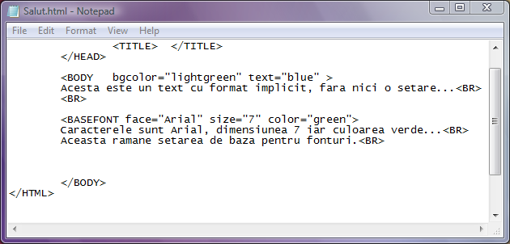
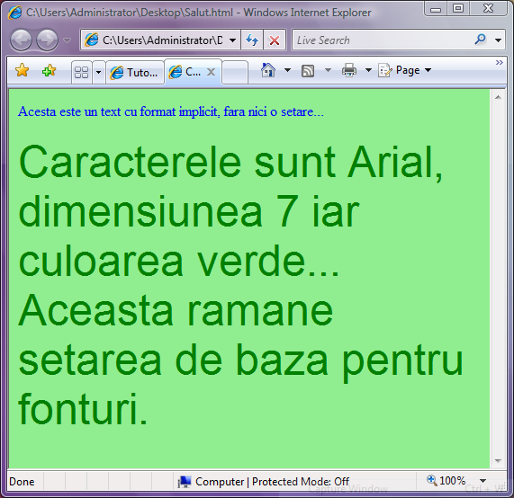
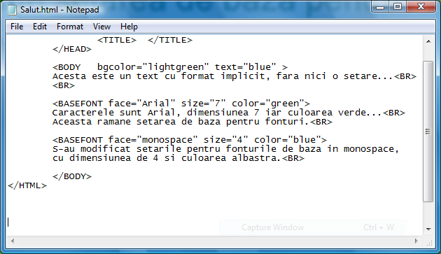
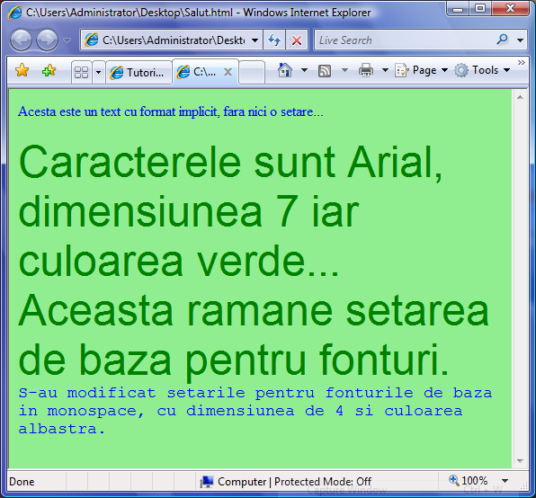

Fonturi de baza
Setarea fonturilor de baza ale paginii web se face cu ajutorul etichetei BASEFONT.
Prin atributele sale pot fi setate stilul de caractere, marimea lor precum si culoarea. Atributele
etichetei basefont sunt urmatoarele:
a)face="lista stiluri"
Prin "lista stiluri" se intelege o insiruire de tipuri de caractere, separate prin virgula. Este
necesar ca in lista sa fie precizate mai multe stiluri de caractere deoarece, daca pe PC-ul unui
utilizator nu este instalat primul dintre stiluri atunci browserul va "citi" urmatoarea optiune si
asa mai departe, pana va gasi un stil de care utilizatorul dispune pe sistemul sau. De exemplu:
face="Arial, Courier, Times New Roman"
In cazul in care browserul nu gaseste fonturile Arial, va cauta fonturi Courier, etc.
b)size="n"
Atributul size seteaza marimea caracterelor iar n este o valoare numerica cuprinsa intre 1 si 7,
cea mai mica dimensiune corespunzand pentru size="1" iar cea mai mare pentru size="7".
c)color="culoare"
Atributul color seteaza culoarea caracterelor, fiind posibile cele doua modalitati de specificare
a culorii: fie un nume valid de culoare in limba engleza, fie o culoare precizata prin codul ei
hexazecimal, cu sintaxa "#RRGGBB", asa bum am mai intalnit la atributele etichetei BODY....
OBSERVATII:
Eticheta BASEFONT nu are pereche(nu trebuie inchisa!)...
In aceeasi pagina web pot fi modificate fonturile de baza cu ajutorul unei noi etichete BASEFONT...
Exemplul1: utilizarea unei singure etichete BASEFONT
Iata codul sursa al uneii pagini web in care e utilizata eticheta basefont:

...si iata ce afiseaza browserul:

Exemplul2: utilizarea mai multor etichete BASEFONT in aceeasi pagina web
(modificarea fontului de baza)
Codul sursa:

...si pagina web afisata de browser:

Inapoi la Blocuri de text...